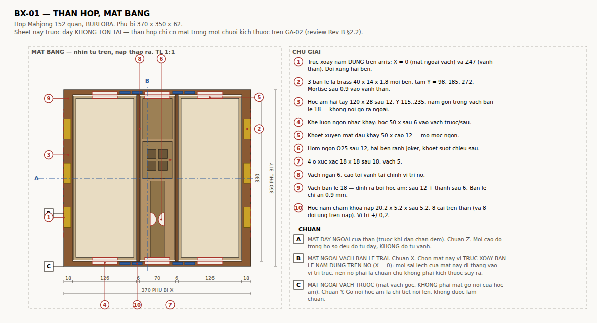
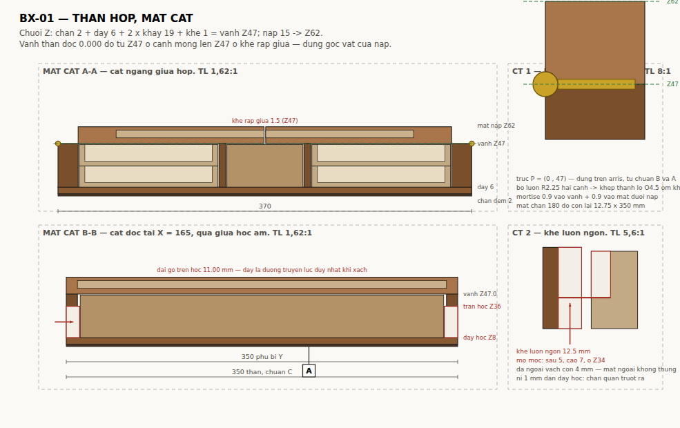

Bộ 6 sheet của Rev B gồm GA-01, GA-02, TR-01, AC-01, HD-01, QA-01. Chi tiết quan trọng nhất — thân hộp — chỉ tồn tại dưới dạng một chuỗi kích thước trên mặt bằng GA-02. Không có dung sai khoang, không có mặt cắt, không có vị trí bản lề so với chuẩn, và chuẩn A/B/C được QA-01 tham chiếu nhưng chưa hề được định nghĩa ở đâu. Đó là review Rev B §2.2.
Sheet này lấp chỗ đó. Mọi trị số sinh từ tools/box_spec.py; hình sinh từ tools/draw_bx01.py.
| X (bề rộng) | 370 |
| Y (chiều sâu) | 350 |
| Z (chiều cao) | 62 |
| Khối lượng cả bộ | 6,26 kg (khay lõi ổn định) · 6,88 kg (khay cocobolo) |
Chuẩn đặt trên thân hộp vì thân là chi tiết gia công trước và mọi thứ khác lắp theo nó.
| A | Mặt đáy ngoài của thân, trước khi dán chân đệm. Chuẩn Z. Mọi cao độ trong hồ sơ đo từ đáy, không đo từ vành. |
| B | Mặt ngoài vách bản lề trái. Chuẩn X. Chọn mặt này vì trục xoay bản lề nằm đúng trên nó (X = 0): mọi sai lệch của mặt này đi thẳng vào vị trí trục, nên nó phải là chuẩn chứ không phải kích thước suy ra. |
| C | Mặt ngoài vách trước — mặt vách gốc, không phải mặt gỗ nối của hốc âm. Chuẩn Y. Gỗ nối là chi tiết nổi lên, không được làm chuẩn. |

X: 18 + 126 + 6 + 70 + 6 + 126 + 18 = 370
Vách bản lề 18 là do hốc âm hai tay: sâu 12 + thành sau 6. Bản lề brass chỉ ăn mortise 0,9 mm vào vành nên nó không đòi hỏi gì về bề dày vách — khác hẳn bản trước, khi ống gỗ R9 ép vách phải đúng 18. Ba cách đóng lại chuỗi X đã so ở tools/width_options.py; chọn 370 vì nó không động tới bố trí lòng hộp, còn 362 làm hỏng hai chi tiết công năng của AC-01.
Y: 10 + 330 + 10 = 350. Không có gỗ nối nào — hốc âm hai tay nằm gọn trong vách trái/phải.
Z: chân 2 + đáy 6 + 2 × khay 19 + khe 1 = vành Z47; nắp 15 → mặt trên Z62.
Nắp đều 15, không vát, nên vành thân phẳng Z47 suốt. Bề dày nắp không còn ràng buộc gì tới bản lề kể từ khi trục dời ra arris — nó được chọn 15 để lấy khay bỏ bài sâu 5,0 mm và tấm Nu 7 mm. Xem mục Bản lề.

Nguyên tắc: cái gì lắp với chi tiết khác thì dung sai một chiều và đi về phía lỏng hơn; cái gì chỉ để nhìn thì dung sai đối xứng.
| Kích thước | Trị số | Dung sai | Lý do |
|---|---|---|---|
| Khoang khay quân (X) | 126 | +0,40 / 0 | khay 124 −0,25 → khe 1,00…1,45 mỗi bên |
| Khoang phụ kiện (X) | 70 | +0,40 / 0 | AC-01 68 −0,25 → khe 1,00…1,45 mỗi bên |
| Lòng hộp (Y) | 330 | +0,50 / 0 | khay 325 −0,30 → khe 2,50…3,00 mỗi đầu |
| Bề dày vách bản lề | 18 | ±0,15 | hốc âm sâu 12 + thành sau 6 |
| Bề dày vách ngăn | 6 | ±0,20 | không lắp với gì, chỉ chia khoang |
| Bề dày đáy hộp | 6 | ±0,20 | vào chuỗi Z |
| Cao độ vành | 47 | ±0,30 | quyết định khe 1,0 trên đỉnh khay |
| Sâu mortise bản lề | 0,9 | +0 / −0,05 | sâu quá thì nắp không kín vành, nông quá thì hở khe |
| Vị trí bản lề theo Y | 88 · 175 · 262 | ±0,30 | ba chiếc phải đồng trục; lệch làm kẹt |
| Bán kính bo lượn arris | R2,25 | +0,10 / 0 | nhỏ quá thì khớp Ø4,5 không lọt |
| Phủ bì X, Y | — | ±0,50 | không dùng độc lập với nắp — xem dưới |
| Đồng mép nắp–thân | — | ±0,30 | dung sai quan hệ, nắp cắt theo thân thực tế |
| Trục xoay | P = (0 , 47) — X từ chuẩn B (nằm đúng trên chuẩn B), Z từ chuẩn A |
| Bản lề | 6 bản lề lá brass 40 × 14 × 1,8, khớp Ø4,5 — mua sẵn |
| Phân bổ | 3 chiếc mỗi cánh, tâm theo Y tại 88 · 175 · 262 |
| Mortise | 0,9 mm vào vành thân + 0,9 mm vào mặt dưới nắp |
| Bo lượn arris | R2,25 trên cạnh ngoài TRÊN của vách thân và cạnh ngoài DƯỚI của nắp |
| Vít | brass, 2 con mỗi cánh mỗi chiếc |
| Mặt chặn 180° | không phay gì — mặt cạnh nắp 12,75 × 350 áp thẳng vào mặt ngoài vách |
| Ống gỗ / mắt mộng / chốt xuyên | KHÔNG CÒN |
Bề dày nắp không nói gì về bản lề. Bản trước đặt trục ở giữa bề dày nắp và suy ra ống gỗ R = nửa bề dày nắp — Ø18, rồi Ø12 sau khi hạ nắp xuống 12. tools/hinge_kinematics.py §1 quét lại bài toán bằng số và cho:
| đặt trục ở | toạ độ | mũi tròn bắt buộc | suy ra |
|---|---|---|---|
| giữa bề dày nắp | (7,5 , 54,5) | R 7,52 | ống gỗ Ø15,0 |
| arris — góc chung của hai chi tiết | (0 , 47) | R 0,00 | không phải bỏ gì |
Hàng một tái tạo đúng kết luận cũ và cho thấy nó đến từ đâu: 7,5 = 15/2 = nửa bề dày nắp, vì mũi tròn phải tiếp tuyến cả mặt trên lẫn mặt dưới nắp. Nghĩa là "R = nửa bề dày nắp" là hệ quả của chỗ đặt trục, không phải một lựa chọn. Đưa trục ra arris thì hai góc đầu cánh nắp trùng với chính trục: bán kính quét bằng 0.
Cái còn phải nhường chỗ là khớp brass Ø4,5, không phải hình học. Bo lượn R2,25 hai cạnh arris; đóng lại, hai đường lượn khép thành lỗ Ø4,5 ôm trọn khớp — khớp chìm trong đường chỉ góc, nhìn nghiêng chỉ còn một sợi brass Ø4,5. Giá: mặt chặn 180° còn 12,75 thay vì 15 mm, hệ số an toàn vẫn 55× dưới người tỳ 5 kg.
Chi tiết đầy đủ: docs/DONG-HOC-BAN-LE.md.
Phương án xách C. Hai hốc lòng bàn tay phay vào vách trước và vách sau.
Hốc âm nằm ở vách trái và phải — tức vách bản lề, dày 18.
| Kích thước hốc | 120 rộng (theo Y) × 28 cao × 12 sâu |
| Băng Y | 115 … 235, đối xứng quanh giữa chiều sâu Y = 175 |
| Băng Z | 8 … 36 — đáy hốc ngang sàn trong |
| Bề dày vách tại hốc | 18, không nối gỗ ra ngoài |
| Thành sau hốc | 6 mm |
| Dải gỗ trên hốc | 11 mm — đây là đường truyền lực duy nhất khi xách |
| Dải gỗ dưới hốc | 6 mm, lại được đáy hộp đỡ lưng |
Vì sao ở vách trái/phải chứ không phải vách trước/sau. Hốc cần 12 (sâu) + 6 (thành sau) = 18 mm bề dày. Vách trước/sau chỉ có 10 → phải nối gỗ ra ngoài, phủ bì Y đi từ 350 lên 374. Nhưng nặng hơn thế: vách trước/sau là chỗ duy nhất nắp và vành thân còn chồng lên nhau, tức chỗ duy nhất đặt được nam châm khóa nắp, và là chỗ duy nhất khoét được khe luồn ngón nhấc khay. Ba chi tiết tranh nhau một bộ phận dày 10 mm.
Vách trái/phải dày 18 và trên nó không có gì tranh chỗ: bản lề brass nằm trên vành (Z47, mortise 0,9 mm), hốc âm ở Z36 trở xuống — hai vùng rời nhau hoàn toàn. Đặt hốc ở đó thì phủ bì không đổi và ba chi tiết kia hết chen nhau. Chính hốc âm mới là thứ định ra bề dày 18 (12 + 6); bản lề không đòi hỏi gì.
Kiểm dải gỗ trên hốc như dầm nhịp 120, tiết diện 11 × 18, ngàm hai đầu, thớ chạy dọc nhịp: dưới tải thiết kế 95 N mỗi tay thì uốn 3,94 MPa (hệ số 28×), cắt 0,36 MPa (hệ số 36×), võng 0,033 mm. Kết cấu không phải ràng buộc — ràng buộc nằm ở bàn tay, xem tools/handle_option_c.py mục 4.
Đây là chi tiết khó nhất trên sheet, và đề xuất trong review Rev B §2.3 không đóng được.
Trường quân chiếm gần hết khoang theo cả hai phương: cần 310,4 × 112,4 trong lòng khay 315 × 114, và khay 124 × 325 trong khoang 126 × 330. Dư địa còn 4,6 mm theo dài và 1,6 mm theo rộng. Không có chỗ nào quanh khay lọt được ngón tay. Khoét vành thân chỉ làm lộ mặt ngoài khay chứ không cho gì để móc; khoét vành khay thì ngay sau vành là trường quân, đỉnh quân chỉ thấp hơn vành khay 2,8 mm. Và "kẹp" cần hai điểm đối diện, mà hai bên đối diện của khay đều bị chắn — một bên là vách bản lề gỗ đặc dày 18, bên kia là vách ngăn dày 6.
Lời giải là khe luồn ngón + mỏ móc, ở hai đầu khoang, nhấc hai tay, cho cả ba khoang (X = 81, 185, 289):
| Hốc trên vách trước/sau | 50 rộng × sâu 6 vào vách 10, chạy từ vành xuống sàn Z8 |
| Da ngoài còn lại | 4 mm — mặt ngoài hộp không thủng |
| Khoét mặt đầu khay | 50 rộng × cao 12 từ vành khay xuống, xuyên hết bề dày vách khay 5 |
| Khe luồn ngón | 6 + 2,5 + 5 − nỉ 1 = 12,5 mm |
| Mỏ móc ngón | sâu 5 × rộng 50, cao 7 mm còn lại dưới chỗ khoét |
| Cao độ mỏ, khay trên | Z34 |
Kiểm mỏ: khay đầy 0,79 kg → 8 N, chia hai tay 4 N mỗi bên. Ép mặt gỗ 0,011 MPa (hệ số 1257×), uốn chân mỏ 0,034 MPa. Kết cấu thừa; ràng buộc là khe 12,5 mm so với đầu ngón khoảng 12 mm dày — vừa đủ.
Đổi lại: chỗ khoét hở ra 9,2 mm trên bề dày quân 11,4. Quân đầu mỗi hàng có thể trượt ra tối đa 13,5 mm rồi chạm đáy hốc — không rơi ra được vì quân dài 36,8, nhưng sẽ kẹn khi trả khay vào. Chặn bằng dải nỉ 1 mm dán vào đáy hốc: vừa chặn quân, vừa làm đệm.
Bản trước phải bỏ khe ở khoang phụ kiện vì hốc âm hai tay khi đó nằm trên cùng vách trước: hốc ăn 16 từ ngoài, khe ăn 6 từ trong, cộng lại thủng vách 10. Chuyển hốc âm sang vách trái/phải làm xung đột đó biến mất, nên AC-01 được nhấc đúng như khay quân — không còn phải kẹp hai dải gỗ qua hõm ngón rãnh Joker.
Rãnh Joker 28 × 152 × sâu 24,5 chứa 8 quân xếp 2 lớp × 4. Quân hở ngang chỉ 2,3 mm mà rãnh sâu 24,5 — không nhặt ra được, phải lật úp cả khay.
Hõm bán nguyệt Ø25 sâu 12, khoét vào dải gỗ từ phía rãnh, ở giữa chiều dài rãnh, trên cả hai dải để kẹp được hai mặt bên của quân. Dải gỗ 15 mm còn lại 3 mm, cộng vách AC-01 5 mm là 8 mm gỗ tổng cộng. Kiểm web còn lại dưới lực ngang 20 N: 1,70 MPa, hệ số 65×. Hõm khoét suốt chiều sâu rãnh để lấy được cả lớp dưới.
4 ổ vuông 18 × 18 sâu 18, vách 5, xếp 2 × 2. Sâu 18 chứ không phải 12: nắp nay phẳng ở Z47 (mặt dưới) nên khe trên vành AC-01 chỉ còn 1 mm, xúc xắc 16 mm phải chìm hẳn. Trường ổ 51 × 51 trong hốc 73 × 58.
Nắp trượt không làm được, và đây là lý do bằng số: nắp phải trượt ít nhất 51 mm mới lộ hết hai hàng ổ, mà chỗ để nắp trượt vào chỉ có 22 mm. Muốn đủ chỗ thì hốc xúc xắc phải dài 102, tức chuỗi AC-01 phải dài thêm 29 mm — không còn chỗ, chuỗi đã khép về 325. Trượt ngang cũng cần 51 mm hành trình mà chỉ còn 7 mm.
Thay bằng nắp thả 64 × 51 × 4 cocobolo, hạ bậc 3 mm quanh miệng hốc để mặt nắp phẳng với vành AC-01, hõm ngón bán nguyệt Ø20 ở một đầu khoét suốt bề dày. Thớ gỗ chạy theo cạnh 51.
Với phương án C hộp luôn được bê ngang nên nắp thả là đủ: xúc xắc chỉ rời ổ khi hộp bị lật nghiêng, mà lúc đó cả hai cánh nắp cũng bung ra. Nắp che không phải tuyến phòng thủ cuối cùng — nó là để xúc xắc không nhảy lạch cạch khi đi.
Vành thân mang 8 hốc nam châm; nắp mang 8 hốc đối ứng. Đây là toàn bộ cơ cấu khóa nắp — xem docs/KHOA-NAP.md để có lập luận vì sao nó phải nằm ở đây và chỉ được chặn phương Z.
| Hốc | 20,2 × 5,2 × sâu 5,2 |
| Vị trí X | 121 và 145, và đối xứng qua khe ráp giữa: 225 và 249 |
| Vị trí Y | 5,5 và 344,5 |
| Dung sai vị trí | ±0,2 — chặt hơn mọi kích thước khác trên sheet |
| Gỗ còn lại | 3,0 ra mép ngoài, 2,0 vào lòng hộp |
Dung sai ±0,2 là có lý do: lệch vị trí giữa hai nửa của một cặp làm tụt lực hút nhanh hơn khe hở giữa hai mặt. Đây là chỗ duy nhất trên thân hộp mà sai số vị trí quan trọng hơn sai số kích thước.
Mặt nam châm phải thụt 0,1 mm dưới bề mặt gỗ, không được nhô. Dán epoxy.
Không có sống nổi. Đệm nỉ 0,8 mm dán dưới nắp trên mỗi khoang, ép khay xuống.
Review Rev B §3.2 yêu cầu một chi tiết đỡ mép tự do của nắp, nhưng yêu cầu đó nêu khi mép nắp dày 8. Nắp nay đều 15, và ở bề dày 15 thì mép tự do võng 0,30 mm dưới 50 N giữa nhịp 330, ứng suất 3,2 MPa, hệ số 34×. Khe ráp giữa cũng đã 0,6 → 1,5 và khe nằm ngang nên võng không làm hai cánh cào nhau. Chi tiết đỡ không còn cần thiết — xem tools/detail_features.py mục 3.
docs/BX-01.md bang tools/md2html.py. Moi tri so sinh tu tools/box_spec.py.